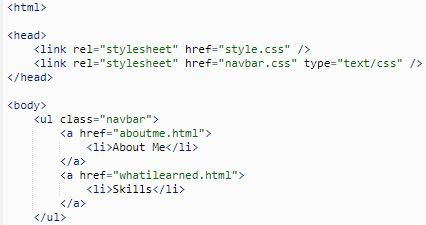
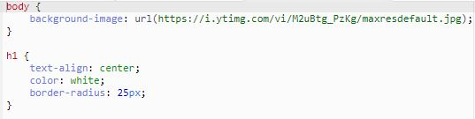
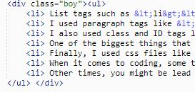
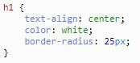
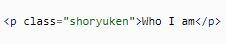
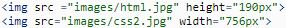
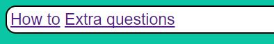

What is HTML?
In html, there belongs basic codes which are tags, which are able to give some sort of element of the webpage like a header, the structure of the website such as the head or the body, or something simple as text. Tags like <p>Who I am</p> (which are used to wrtie paragraphs) or <li> The basics of coding</li> and <ul></ul> (which are list item and unordered list tags), are commonly used in any other webpage, and are the most easy to remember.
What is CSS?
In addition, the way websites have certain designs or types of styles with the structure comes from the use of css files. With the use of css files, you can be able to link your html page to a css page by making a link called <link rel="stylesheet" href="style2.css" />. From there, you can type certain properties that can link to your html codes and change types of the aspects of the codes, such as font-family(to be able choose what type of font you want for your text like headers or paragraphs), text properties like aligning(text-aligning), the size(text-size), classes(.class), or even the whole body of the website. These are also the most basic and easy to rememeber, since they're essential for enhancing the quality of your website.
Additional information and examples of tags used in HTML files
- List tags such as <li> The basics of coding</li> and <ul></ul> to simply organize each piece for a certain topic about and to make easier for my viewers to gain a clear idea of what I'm talking about(like how I managed to simply make this list talking about what are the types of codes I used for this section of the webpage). 
- I used paragraph or header tags like <p>Who I am</p> and <h1>Who I am</h1>, just for the sake of organization and to be able to identify each section's topic like who I am, or what are my favorite things to do. By typing these certain html codes in the body of the html file, it makes it much easier to indicate sections of my page. In addition with css, I stylized headers by making a border or giving a certain font color with border-radius: 25px; and color:blue;. 
- I also used class and ID tags like <p class= "class"> or <p ID="ID">, because it makes it much easier to find and edit specfic elements or tags like the font for my headers or paragraphs or changing the style for each different border on the page. With the use of css I can be able to identify and change these certain classes or tags by making either #class (for class tags)or .ID (for ID tags) 
- One of the biggest things that I used are image links like "img src="http://image example.jpg", because I wanted to give off more variety for my topics with the use of visuals instead of just telling them through text. Some examples are the xbox controller image to represent my addicition for gaming, or the anime and internet image to represent some of my favorite hobbies. 
- Another big part of my website is the navbar, which I used mainly to be able to link two different webpages together. I was able to make this, by simply By making a this css file, it makes it more convient to find a seperate webpage in a single webpage. This happened with use of a link <link rel="stylesheet" href="navbar2.css" type="text/css"/>, and with the use of css codes such .navbar{} (which is the core of navbar and how I would be able to give it certain properties). In addition to everything, I created this navagation bar to be able to give some interaction to the website. 
.jpg)
Important things you should know
- When it comes to coding, something that you would type in might not work the first time, and it's important to figure out what type of code it is (whether that would be css or html), and it's best to learn about the code to remember its use and function. Once you learn about and remember a certain code, you can be able to benefit its use for creating or stylizing for a webpage.
- Other times, you might be lead to specific decisions that could affect the coding for your webpage. One example can be taken from my webpage, where I had to embed an online image, but instead of being small enough for the webpage, it comes out larger than the page itself. So to fix the error, I decided to change the width and length, to make it a lot more organized, give more room for other images, and to make it much easier for my views to see.